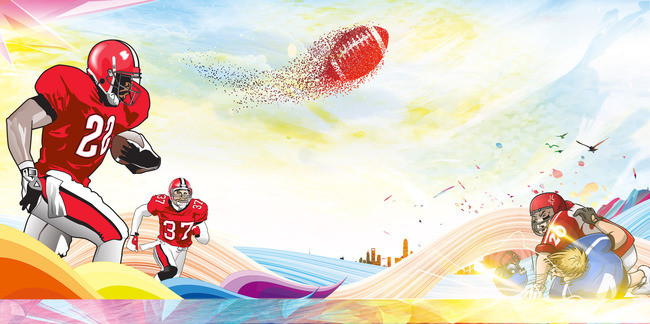
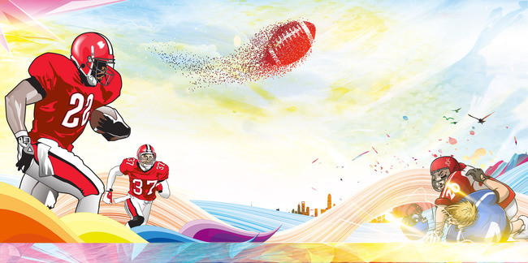
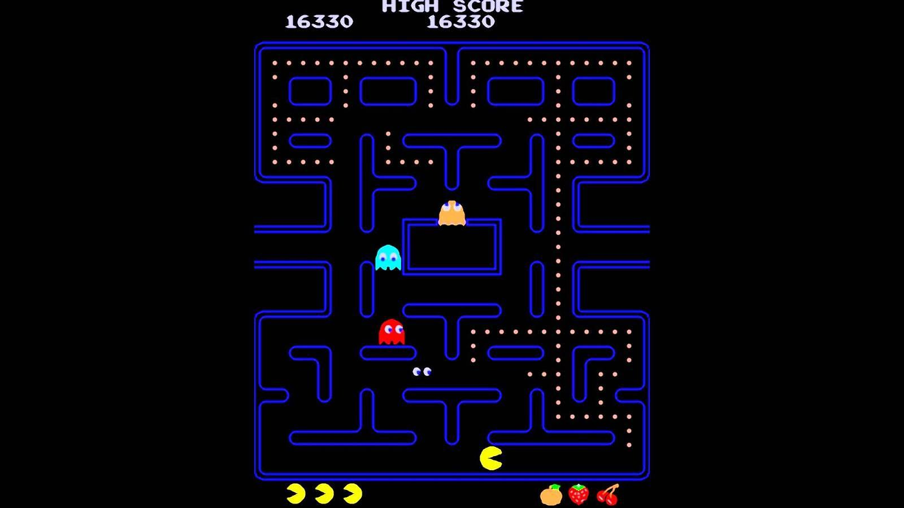
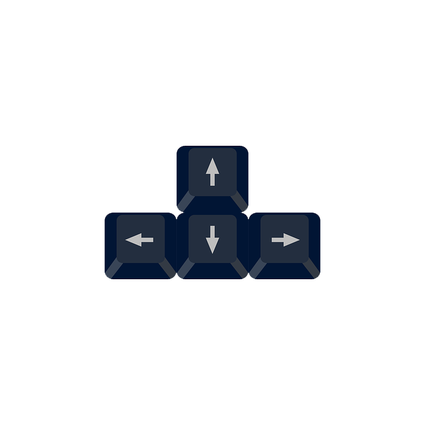

PAC-BY és un joc basat en pacman en el qual hem afegit l'aspecte de rugby que es basa en un personatge ( quarterback ) el qual ha d'atrapar pilotes de rugby dins d'un laberint i anar aconseguint punts mentre que l'enemic no l'atrapi. Quan el persoantge aconsegueixi agafar totes les pilotes passara al seguent nivell a on s'afegeix un nou enemic. Per altra banda, si l'eneic l'atrapa GAME OVER.
En aquest joc, les instruccions són bàsiques i senzilles, s'utilitzen les tecles del teclat per poder moure el personatge, la tecla de W fa que el jugador de rugby vaigi cap amunt de la pantalla, la tecla de S serveix perqué el personatge vaigi cap a baix i les dues tecles del costat esquerra i dret, o sigui la D(dreta) i la A (esquerra) perqué el personatge vaigi en aquestes direccions. Tot i així el moviment estarà limitat per les parets, o sigui que si tens una paret dalt de tot i apretes la fletxa per anar cap amunt, no t'hi deixarà anar i aixi amb tots els moviments.
